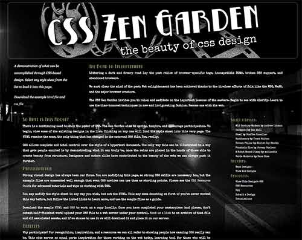

Matt James Media
Matt James Media

Custom WordPress child theme. HTML5, CSS3, PHP

Custom Wordpress theme. HTML, CSS

WordPress child theme. CSS3

WordPress, CSS3

CSS3, RWD


{kind=link}
 My name is Matt James and I have followed a long and circuitous path to come to the point that I am at today. I have been involved in media communications for over twenty years and began my foray into interactive media and design a little over five years ago. When I'm not developing websites, designing and photographing for local startups or recording my thoughts, I can be found chasing kids, riding bikes and playing outside.
My name is Matt James and I have followed a long and circuitous path to come to the point that I am at today. I have been involved in media communications for over twenty years and began my foray into interactive media and design a little over five years ago. When I'm not developing websites, designing and photographing for local startups or recording my thoughts, I can be found chasing kids, riding bikes and playing outside.Contact me at mattjamesmedia@gmail.com
Links to some work that I've done:
- matteblackmedia.net is my legacy site featuring a large collection of my cycling photography. Built with a custom WordPress theme.
- matteblackmedia.com is a turnkey WordPress site built to showcase my real estate photography.
- My coverage of the 2014 Gateway Cross Cup on cyclingnews.com
- My coverage of the 2014 Gateway Cup on cyclingnews.com
- My article in Freehub Magazine on the Greensfeld trail system (PDF)